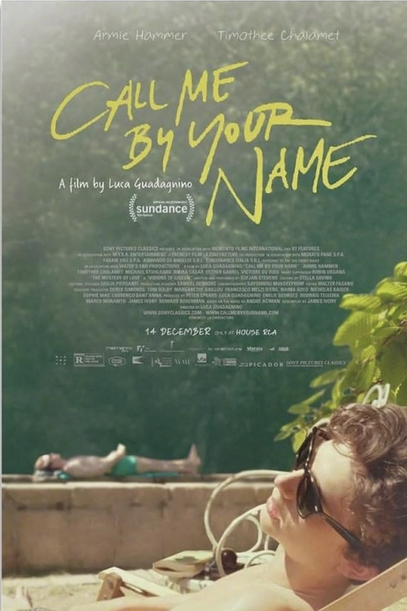
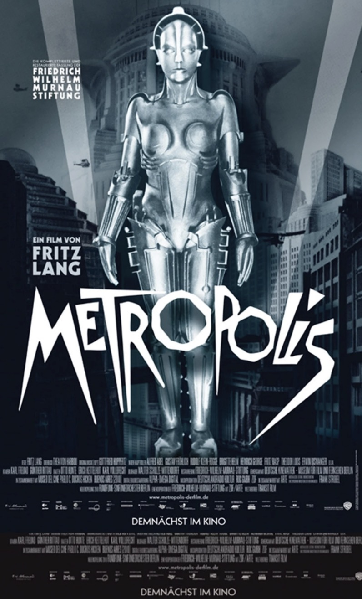
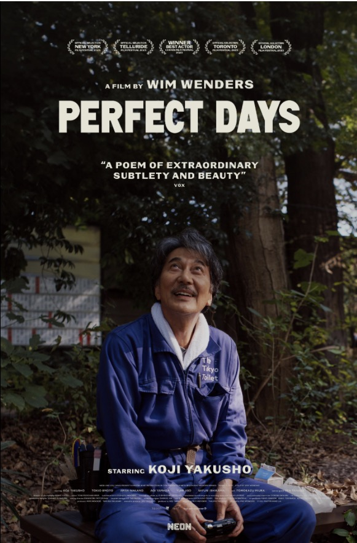
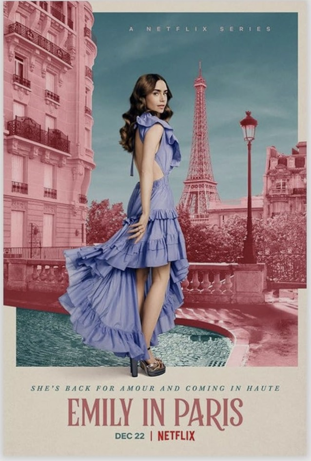
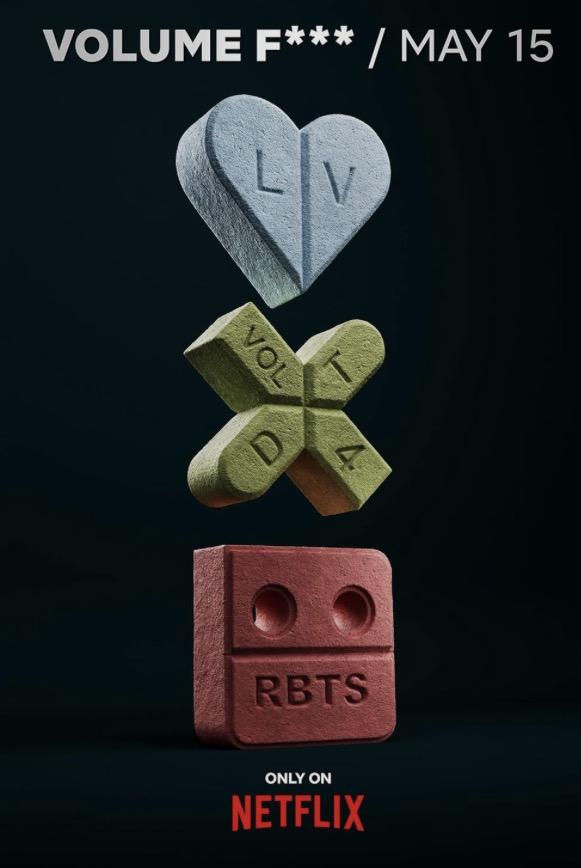
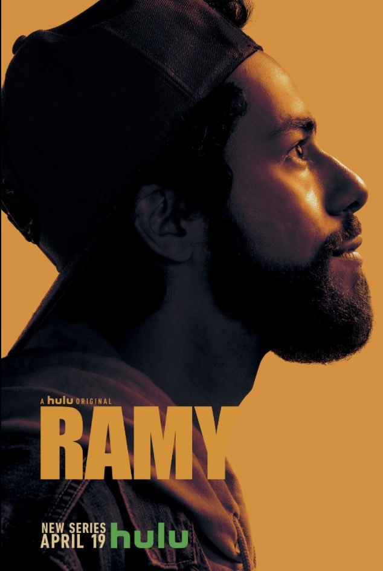

Filme

Call Me by Your Name
Ich weiß gar nicht, wo ich anfangen soll, ich bin einfach vollkommen vernarrt in diesen Film. Die Farben, die Geräusche im Hintergrund… Wenn ich ihn sehe, spüre ich förmlich die trockene, warme Sommerluft Italiens auf meiner Haut. Mindestens einmal im Sommer zelebriere ich dieses Gefühl. Nach einem Tag am See oder im Freibad komme ich nach Hause, während es noch hell ist, reiße die Fenster weit auf, lasse den Wind durch mein Zimmer wehen, dusche frisch, spüre noch die Sonne auf meiner Haut und bestelle Sushi. Dann drücke ich mit einem Gefühl absoluter Glückseligkeit auf Play. Und es wird nie langweilig, denn jedes Mal, wenn ich den Film wiedersehe, entdecke ich neue Details im Bild, die mich zum Lächeln bringen. Ich liebe diese offensichtliche, einfache, natürliche Schönheit. Die sanften Charaktere. Alles daran fühlt sich ehrlich und so real an.

Metropolis
Beschreibung für den zweiten Film. Erkläre, warum dieser Film besonders ist.

Perfect Days
Text über den dritten Film. Vielleicht eine Verbindung zu deinen eigenen Erfahrungen.
Serien

Emily in Paris
Beschreibung für die erste Serie. Füge hier Details hinzu, die Leser neugierig machen.

Love, Death & Robots
Hier könnte stehen, warum diese Serie in deiner Sammlung nicht fehlen darf.

Ramy
Letzter Platzhalter-Text. Ersetze mich mit deinem eigenen Inhalt.